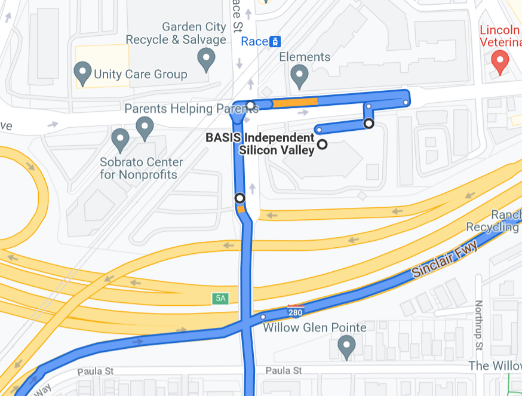
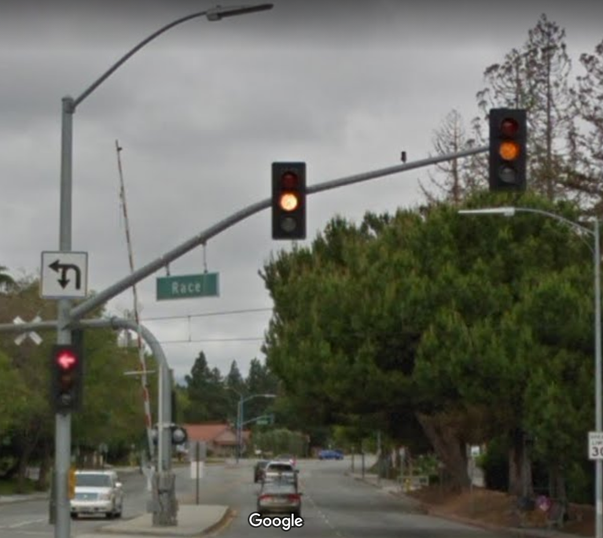
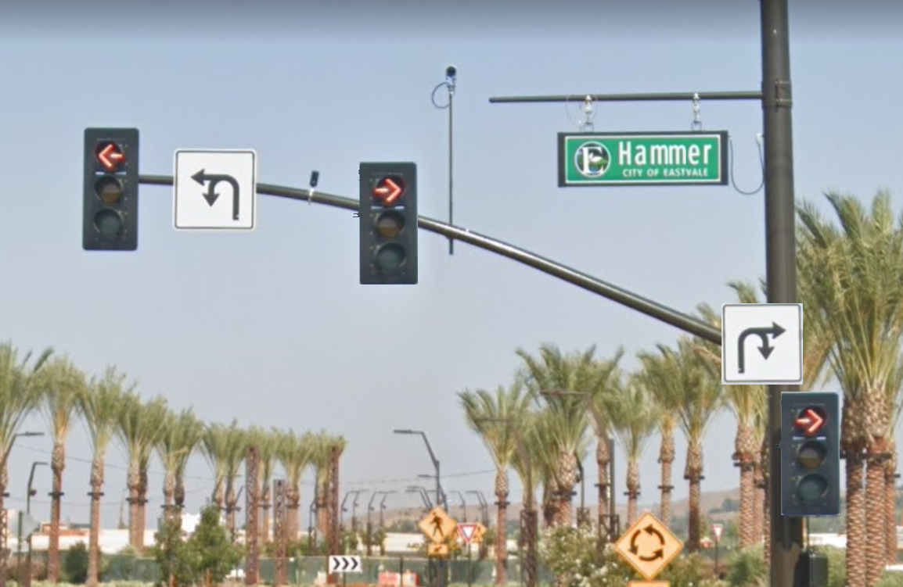

Your location right now: Parkless Ave BISV
Destination: Nevada
you start driving out of BISV to the train intersection.
Your phone says:

KILO WATT? that intersection is yellow forever

what do you chose?
run the light. Anyways it won't turn green wait for it to turn greenOr, you can go turn onto a road with hammers dropping on it:
